Einleitung und Motivation¶
Lernziele des Moduls¶
Ein tieferes Verständnis für das Verhalten von MOS-Elementen im analogen Schaltungsentwurf entwickeln und Ausblicke auf weiterführende Kurse im Master bekommen.
Funktionsprinzipien und Charakterisierung von MOS-Elementen
Fundamentale integrierte analoge Schaltungen
Operationsverstärker
Lernen, Grenzen und Tradeoffs analoger Schaltungen zu bewerten
Entwickeln eines systematischen Entwurfsstils, auch anwendbar für andere Ingenieursdisziplinen
Lernen, einen Schaltungssimulator für den Entwurf einzusetzen.
Technisch-wissenschaftliche Dokumentation
Konsoliderung der oberen Aspekte in Laborprojekten
Voraussetzungen des Moduls¶
Netzwerkanalyse im Zeit- und Frequenzbereich
Grundlagen Bipolar und MOSFET Halbleiterphysik
Ersatzschaltbilder von Halbleiterbauelementen
Pol-Nullstellen-Diagramm
Bode-Diagramm
Scientific Computing / Data Science¶
Analoge Schaltungssimulation (SPICE)¶
Betriebssystem (OS) - Werkzeuge (Tools)¶
-
A large collection of GNU and Open Source tools which provide functionality similar to a Linux distribution on Windows.
Schreibst Du noch oder TeXst Du schon?¶
LaTeX Editoren¶
IDE’s
Kollaborative Frameworks
Literaturverwaltung und LaTeX¶
Labor¶
Experimente mit dem ASLK Pro.
Anwendung unterschiedlicher Beschreibungsebenen
Systemebene (Mathe, z.B. Matlab/Simulink, Python)
Schaltungsebene (SPICE)
Charakterisierung (Messungen)
Analog System Lab Kit – ASLK Pro
Experimente 1 bis 3
Messautomatisierung Red Pitaya STEMlab 125-14/10
Data Science¶
Arbeitsordner auf dem Rechner (sandboxing, virtualenv)
Tabellenformat (ASCII, CSV)
Datenspeicherung in speziellen Formaten, z.B. mat-files (HDF5)
Exceldatei (.xlsx ) or OpenDocument (.ods)
Schaltungsanalyse/-entwurf \(\neq\) Black Magic¶
Schaltungsanalyse.
ist die Fähigkeit, Schaltungen in handhabbare Teile zu zerlegen
basierend auf einem einfachen, aber hinreichend genauen Modell
“Just-in-time” Modellierung: Verwende kein komplexes Modell, so lange es nicht benötigt wird!
eine Schaltung \(\Rightarrow\) eine Lösung
Schaltungsdesign/-entwurf.
ist die Fähigkeit der Schaltungssynthese auf Basis von Erfahrung und intensiver Analyse.
eine Spezifikation \(\Rightarrow\) viele Lösungen
Entwurfspraktiken werden am besten durch’s “Selbermachen” ausgebildet – “Machen ist wie wollen nur krasser.”
Schöne neue Welt¶

From Sand to Silicon (Infineon, Dresden)¶
FinFET (Intel)¶
TSMC Fab (Next Gen 7/5 nm)¶


Moore’s Law¶
Systemhierarchie¶
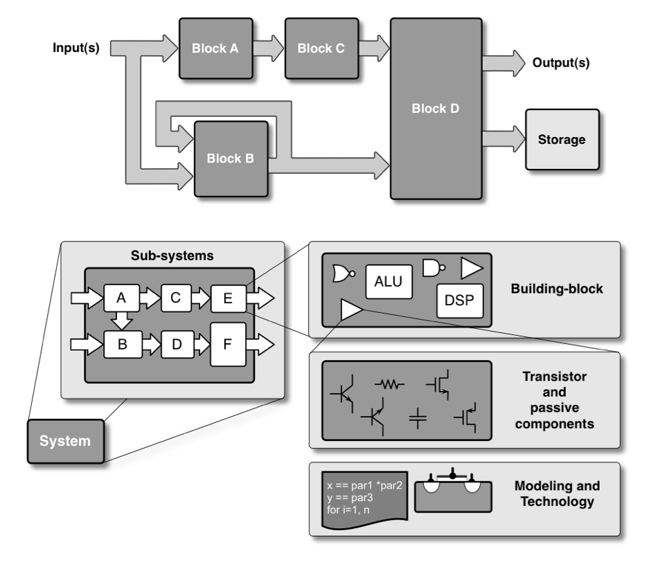
Nutzen Sie Hierarchien zur Beschreibung komplexer Systeme
Teile und herrsche


Backend Phasen¶
Packaging
Zuverlässigkeit = Qualität auf Zeit
Testing auf Wafer Level, known good die (KGD)
Burn-in und Accelerated Aging (thermischer Stress, Arrhenius Gesetz)
Automatic Test Equipment (ATE)
System Probe
Interconnect Test
Build-in Self-Test (BIST)
Statistische Datenanalyse und Yield Prognosen
Ausfallrate FIT (failure in time)
Badewannenkurve
Sie werden Experte¶
Leistungsmerkmale.
Hintergrundwissen
Systemverständnis, Architektur, Herstellungsverfahren, Implementation
Unterbewusste Kompetenz
Abgespeicherte Erfahrungen aus Erfolgsgeschichten und Misserfolgen
Spezialwissen
Berufsspezifisches Wissen
Teamwork Haltung
Kommunikationsfähigkeit, Berichtswesen und technische Präsentation
Kreativität
Tool-Kenntnisse
Evolution von Produkten¶
Angetrieben durch Technologieverbesserung
Kosten (größere Chips, geringere Größe der Merkmale, bessere Ausbeute)
Leistung (neue Bauteile, höhere Geschwindigkeit, weniger Stromverbrauch)
Angetrieben durch Verbesserung der Entwurfsmethodik
Architektur (Leistung, Funktionen)
CAD (Entwicklungskosten, Time-to-Market)
Komplexität der Designs verdoppelt sich jedes Jahr (Moore’s Gesetz)
Rolle von CAD
Verbesserung der Produktivität von Konstruktionsprozessen
Reduzierung der Komplexität für den Konstrukteur
Sicherstellung des ordnungsgemäßen Betriebs der Geräte
EDA Kompetenz¶
EDA-Anbieter (Tool-Entwickler)
Identifikation von Entwurfsaufgaben, Bedarf an Werkzeugen
Entwicklung von Strategien und Algorithmen
Implementierung von Software-Werkzeugen
Verifikation der Stabilität und Funktionalität der Software-Tools
IC-Hersteller
Entscheidungsplanung, welches Tool die Produktivität steigern könnte
EDA-Tool-Manager, Installation und Wartung
Experten für Softwareeinsatz, Anwendung in Produktdesign und -entwicklung
Dozenten und Studenten
Jobchancen
Notwendigkeit, auf dem Laufenden zu bleiben
Ansichten zur Hardware (I)¶
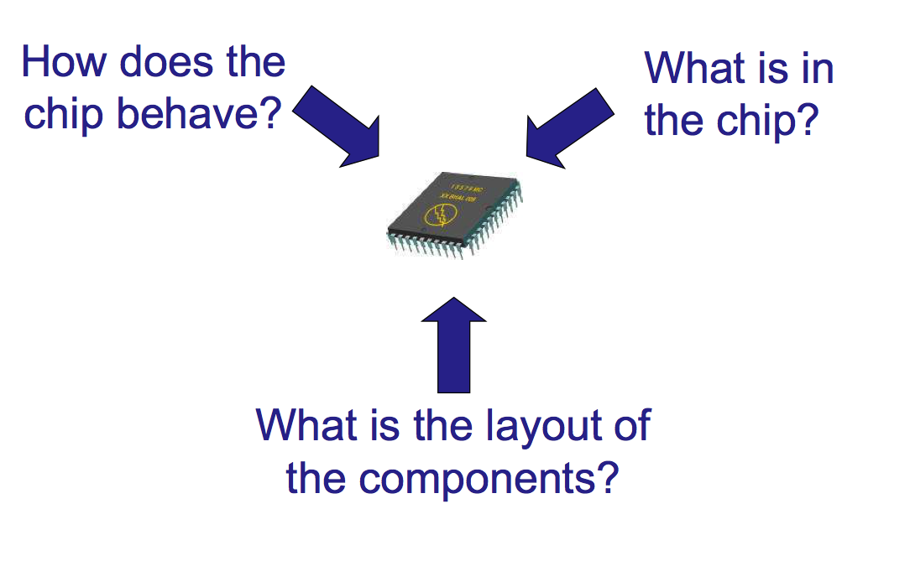
Ansichten zur Hardware (II)¶
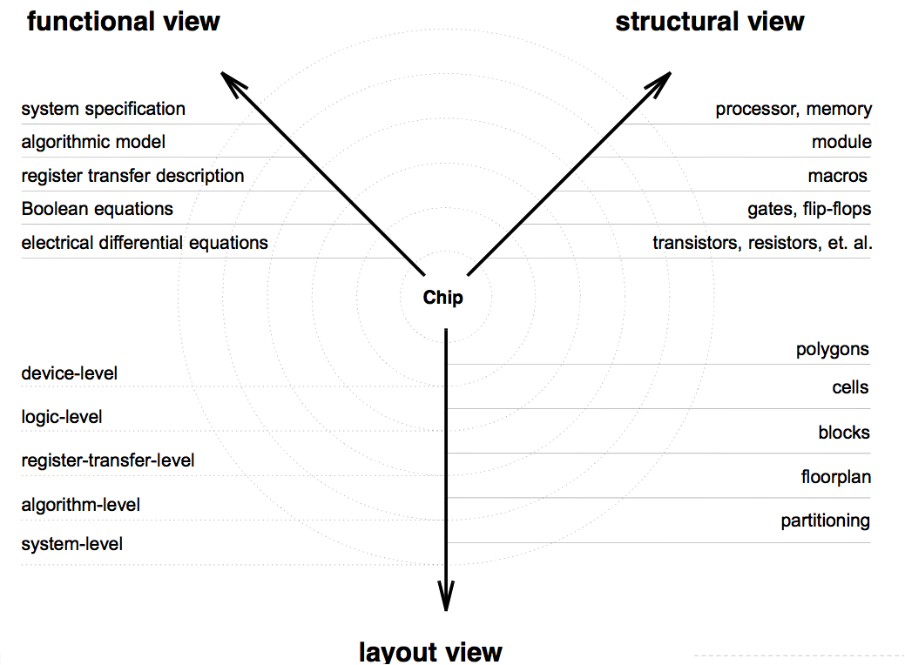
Abstraktionsebenen¶
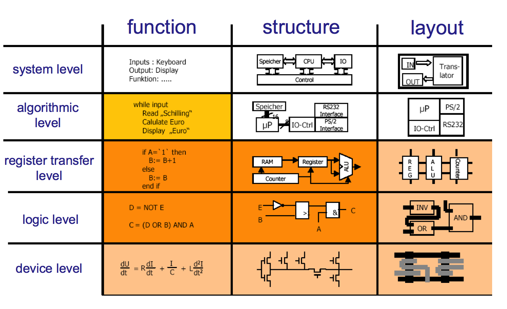
Entwurfsablauf¶
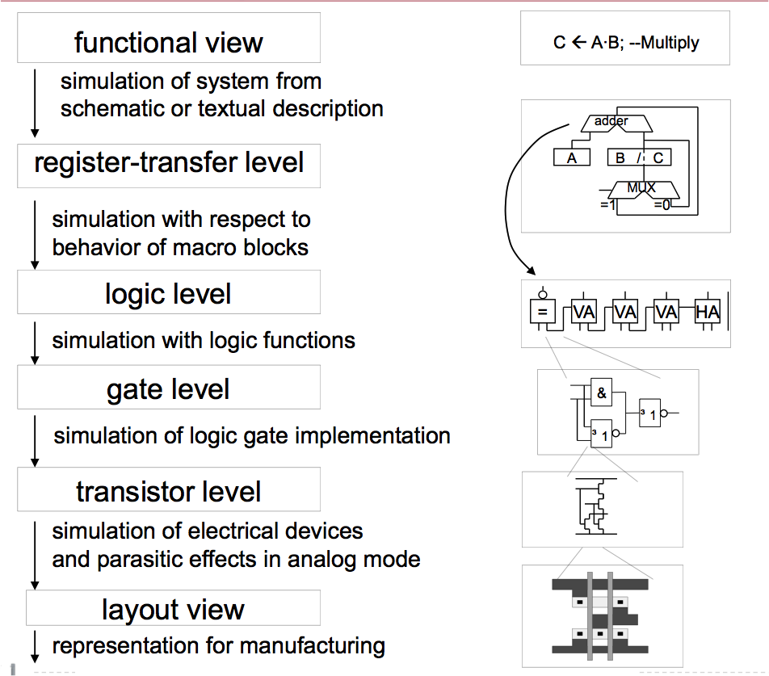
Verifikation¶
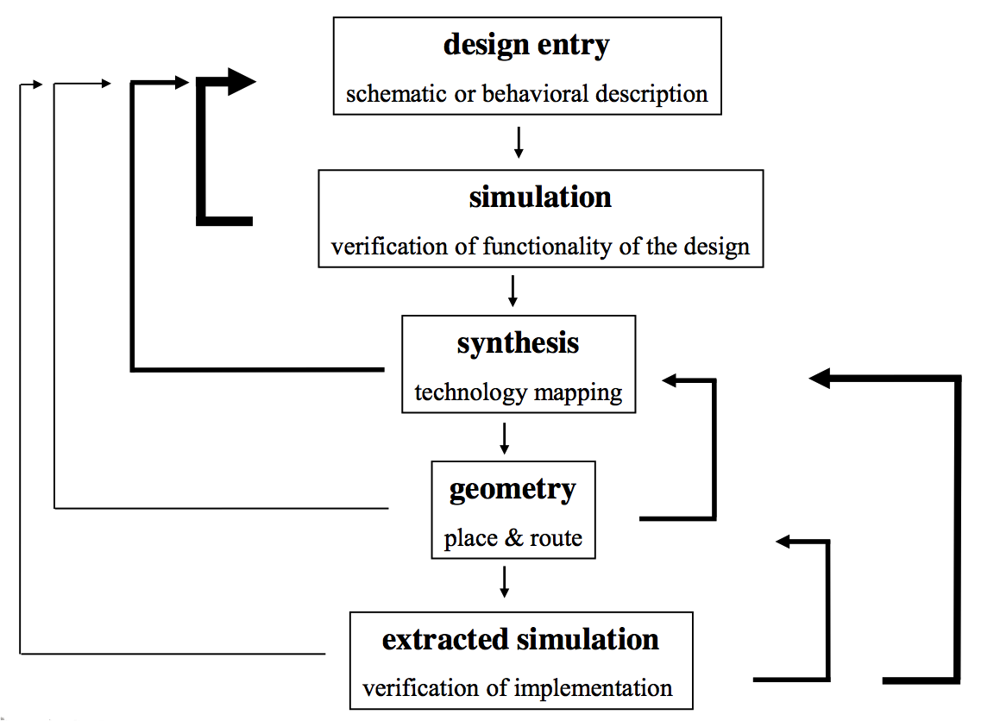
Frontend vs. Backend (analog)¶
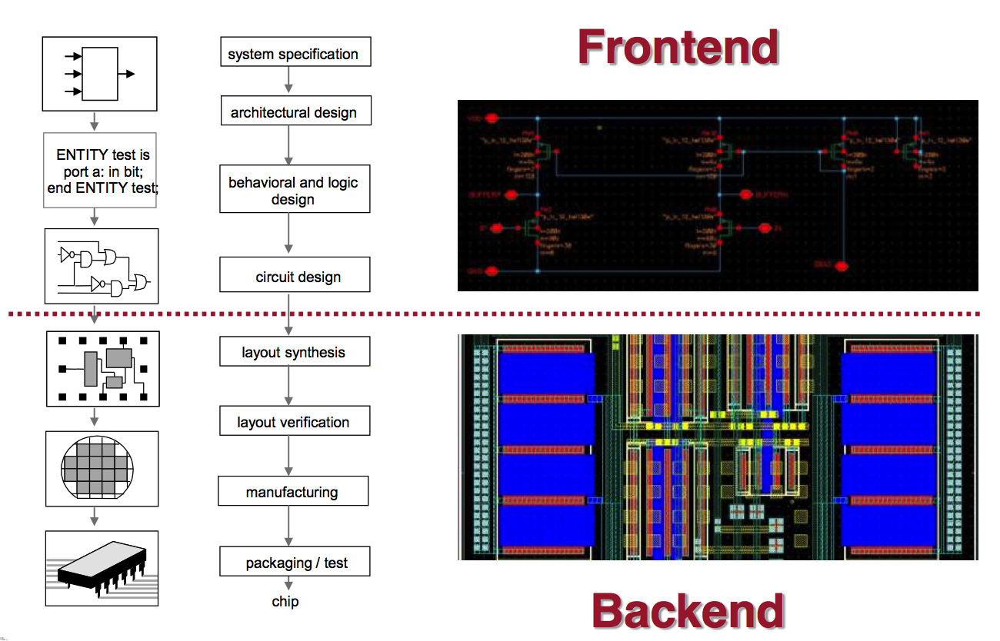
Frontend vs. Backend (digital)¶
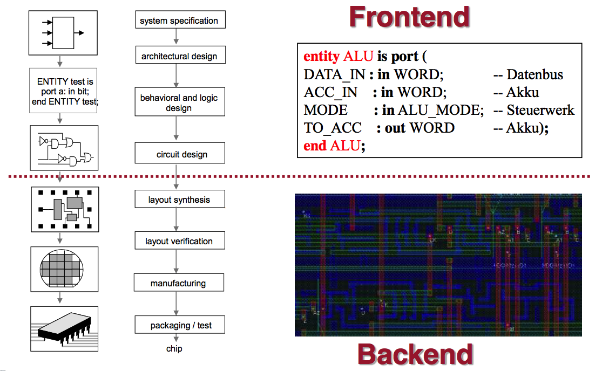
Design-/Entwurfsmethodik¶
Full Custom - vollständig manuell: ASIC
Überwiegend analoge Schaltungen
Einfache digitale Gatter
Volle Kontrolle, aber lange Entwicklungszeit (bis zu Jahren)
Semi-custom: ASIC-Fertigung mit Verwendung von vorgefertigten Teilen
Standardzellen, Makrozellen, IP’s
Wiederverwendung von vordefinierten Blöcken oder Maskensätzen
Eingeschränkte Kontrolle/Flexibilität, aber kürzere Entwicklungszeit (bis zu Wochen)
Vollständig automatisiert: Keine Fertigung, reprogrammierbare ASICs
FPGA, PLA
Ausschließlich digitale Schaltungen
Schnelles Prototyping
Analog Design Entry¶
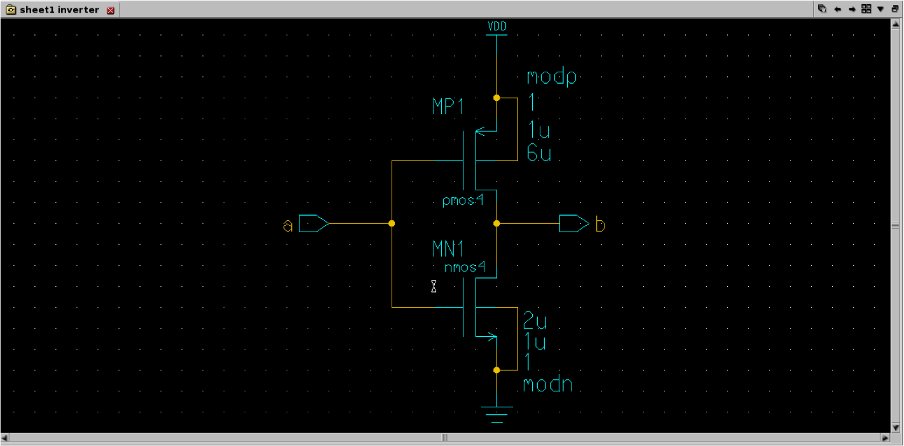
Netlist¶
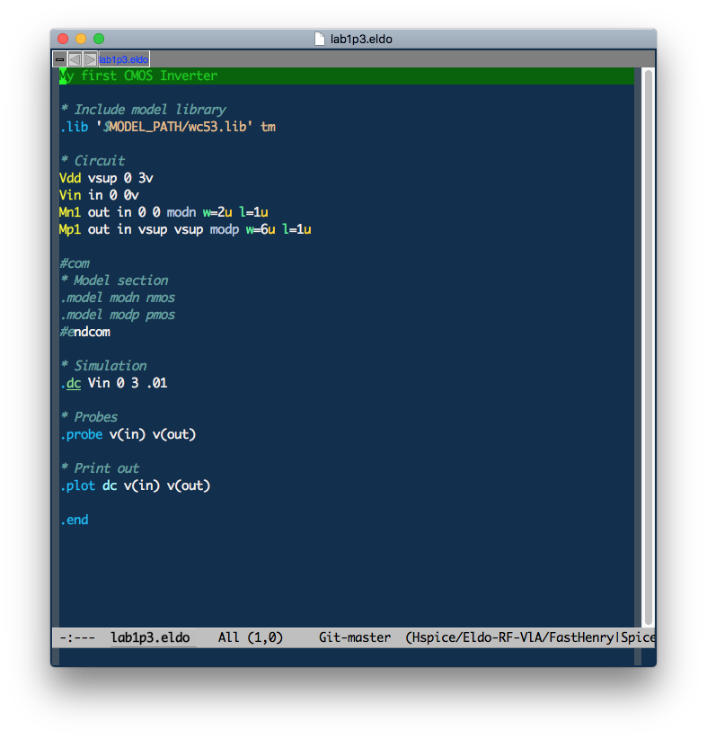
Layout¶
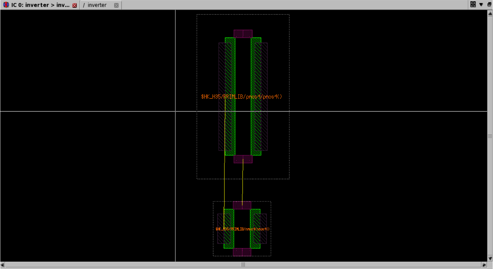
Digital Design Entry¶
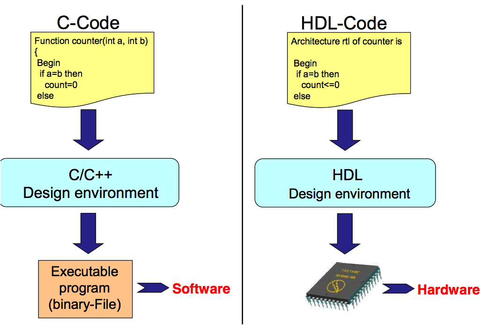
Hardwarebeschreibungssprachen¶
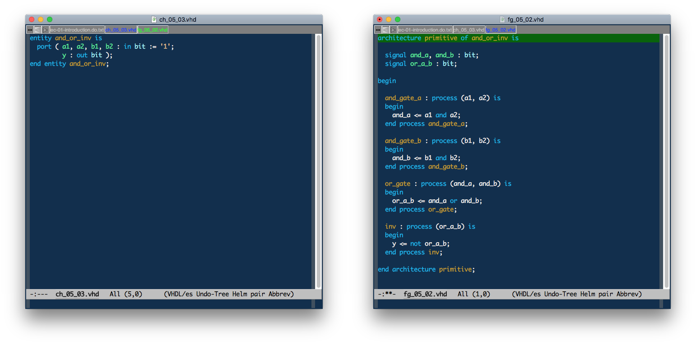
Technology-Gates und Netlisting¶
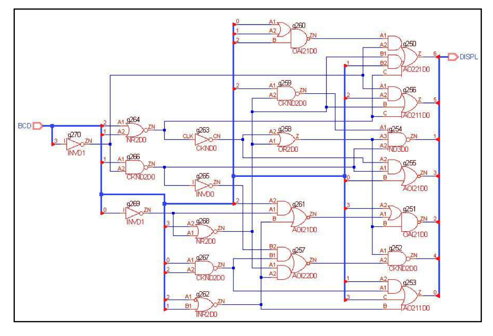
Standard Cell Layout¶
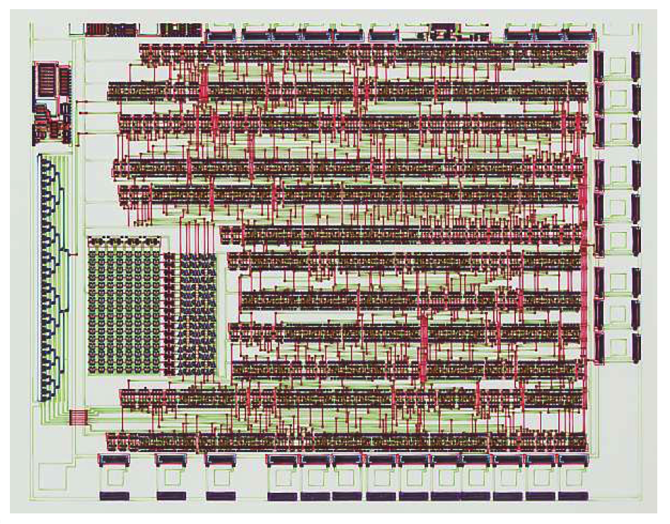
Nachhaltige Elektronik …¶
Geekchester.
Warum es sicht lohnt …¶
Circuit Song.
Und ab an den Strand …¶
Viva la Electronica.